Integrity
Charts show the oldest data
Market pages order price history oldest-first with .limit(200) (binary) and .limit(1000) (multi-outcome). Home queries hit PostgREST's 1,000-row cap. The API route already does it newest-first.
Polymarket, Kalshi and Kichiko captured on the same screens at 390×844 and 1440×900, in both themes, with computed styles, axe scans and throttled performance. Each finding below comes from a screenshot, a measurement or a line of our code.
A landing page sends strangers to the home page and the ticket. Right now both carry defects that traffic would multiply. Landing comes after the design tokens settle, as Phase 4. A dated campaign or demo moves it up to right after Phase 1, but never ahead of the legal fixes.
| Measure | Polymarket | Kalshi (demo) | Kichiko |
|---|---|---|---|
| Text failing WCAG AA contrast | 20.1–22.0% light4.0–4.1% dark · grey #8b929b on white = 3.14:1 |
CTA 2.32:1White on #0AC285 · critical axe issues on every page |
0.2–0.4% light0.0–0.1% dark · but the ticket's payout text is 2.18:1 |
| Controls at least 44 px | 13.0%41.5% under 24 px |
7–10%Row Yes/No 167×32, ticket pills 96×28 |
31.5%23.7% under 24 px · 158 on one multi-outcome page |
| Home page weight, throttled phone | 4,932 KBJavaScript 3,173 KB · LCP 7.5 s |
Not measuredBot challenge on production |
515 KBJavaScript 250 KB (market page 400) · budget 150 |
| Pinch-zoom | Disabledmaximum-scale=1 on 52 of 56 captures |
Not measured |
Allowed |
| Price notation | ¢ and $Yes 16¢ + No 85¢ = 101¢ |
¢, % and “1.15x”Yes 86¢ + No 15¢ = 101¢; API asks sum to $1.05 |
KSh and %, with leaks¢ in the limit row and order book; KSh / Ksh / KSH |
| Fee shown in the ticket | Nowhere |
Inside the priceTooltip “Includes a fee of $0.07” (2025 recording) |
Nowhere |
| Stake when the ticket opens | EmptyChips +$1 / +$5 / +$10 / +$100 |
Not establishedPresets $50 / $100 / $250 (2025) |
Pre-filled KSh 130Chips are converted US dollars |
| Invalid amount (0, −5, 99,999,999) | No feedbackTrade stays enabled, no aria-invalid |
Not measured |
No inline error seenTo be tested properly in Phase 2 |
| Sign-up pressure | Geo gate every loadUS exit IP |
Modal opens by itself7.5–10.6 s after load on 44 of 60 captures |
Only at commit |
| Theme | Switch + follows OS |
Follows OS |
Forced darkIgnores the phone's setting |
Kalshi screens come from its official demo site, which uses mock prices, so read them for layout and styling only. On a phone, swipe each row sideways.
What a stranger sees first.
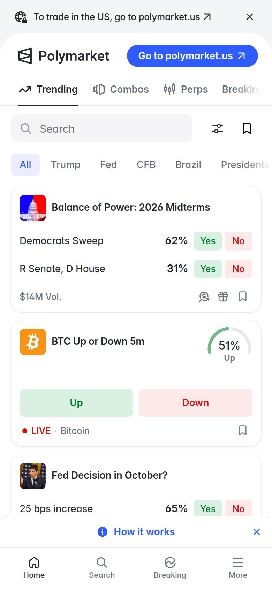
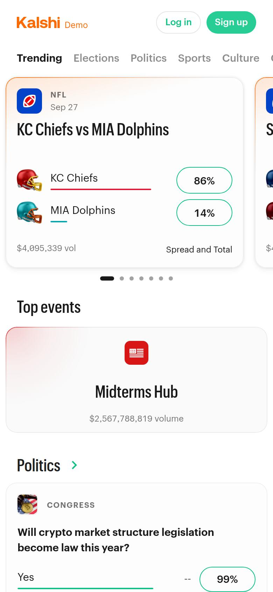
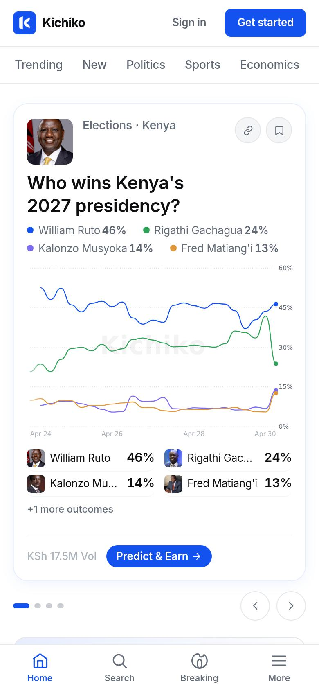
Where the decision is made.
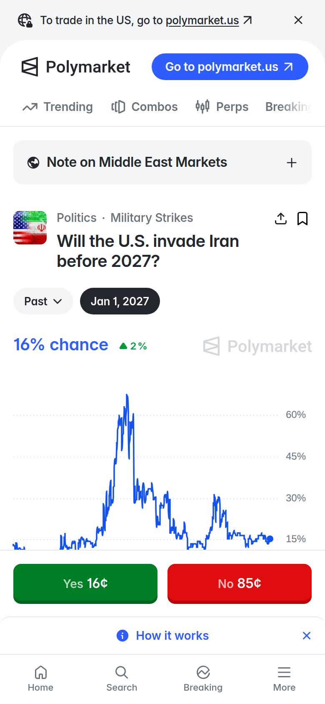
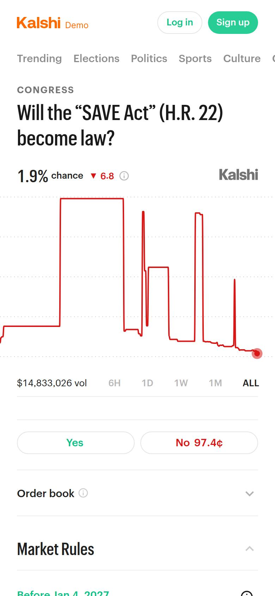
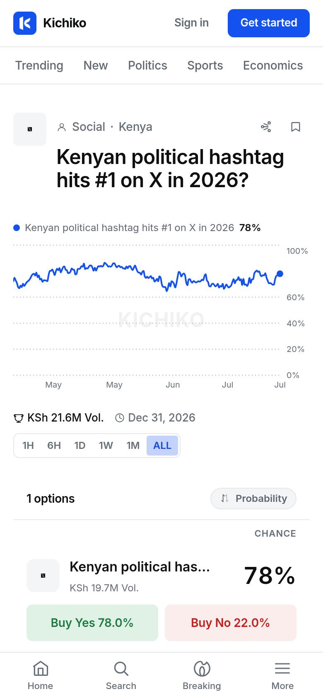
The money screen. Every serious Kichiko defect sits here.
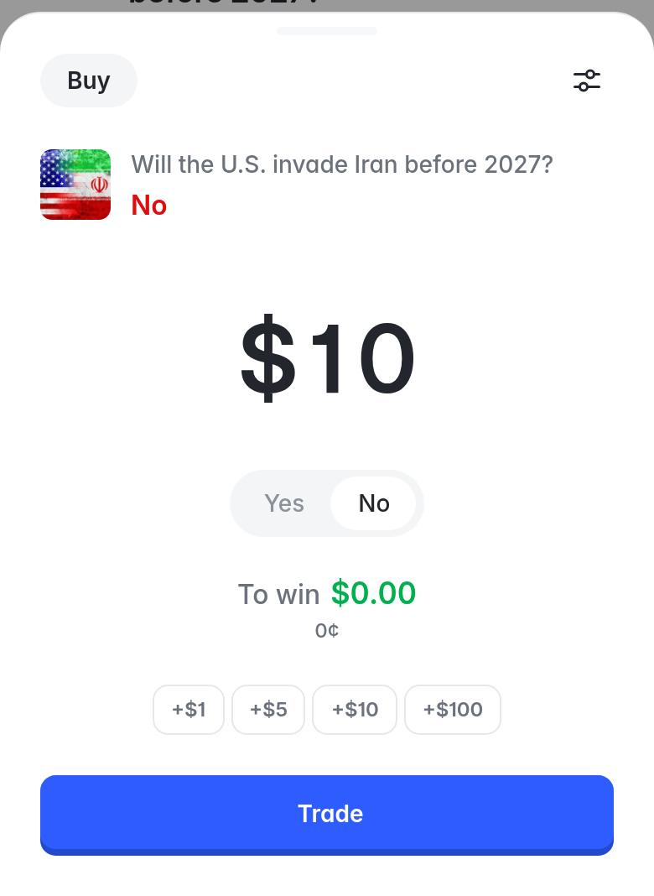
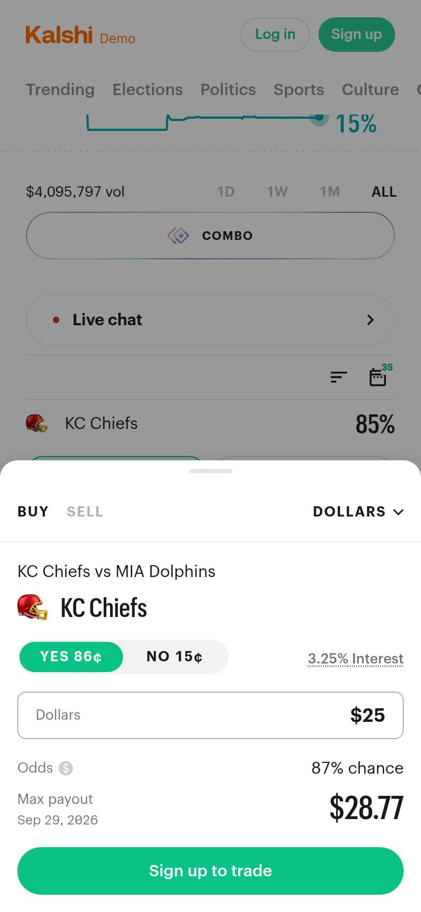
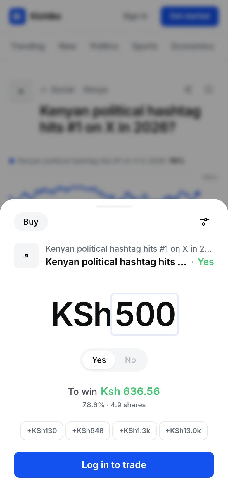
Many candidates, many small targets.
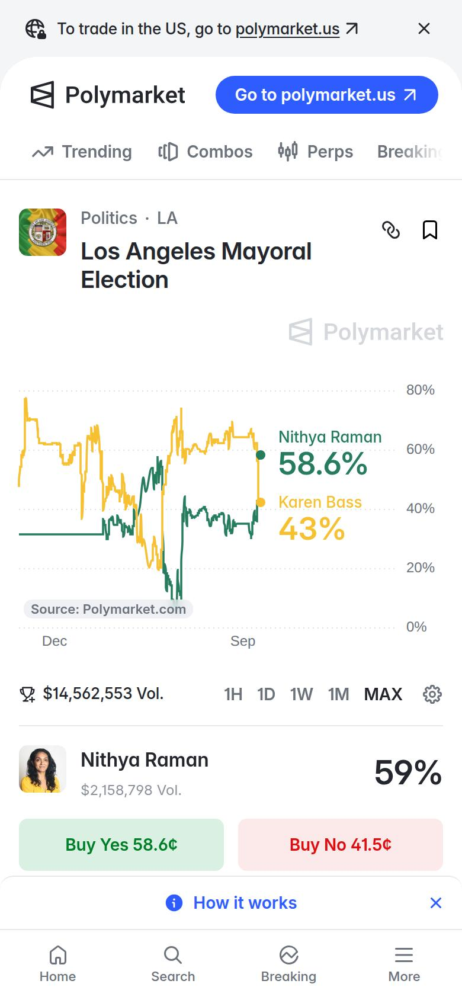
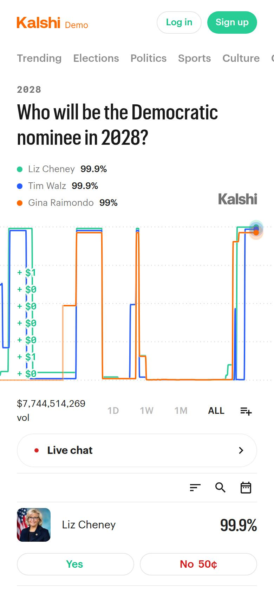
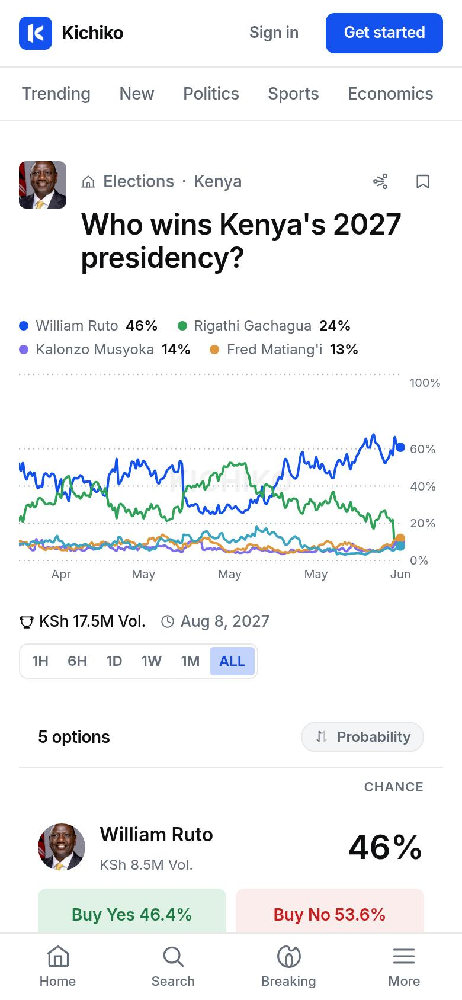
What each product does with the phone's dark setting.
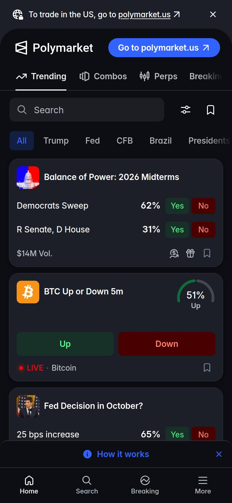
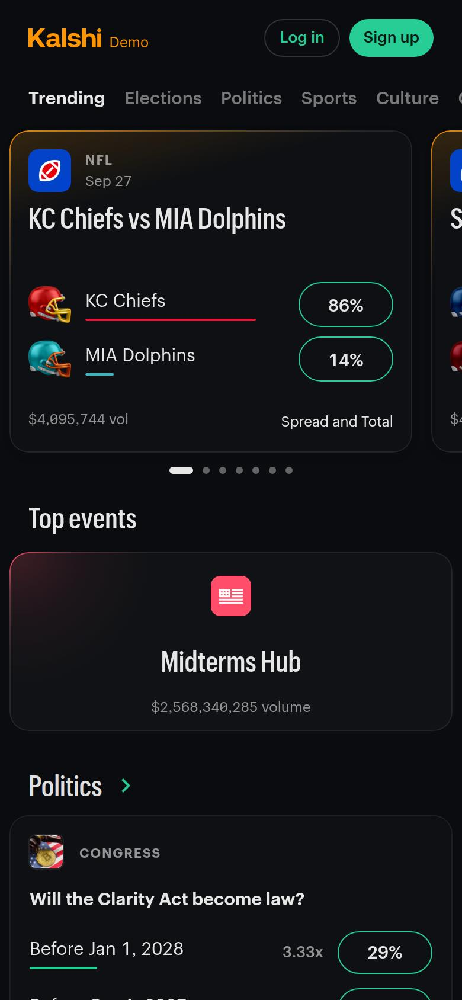
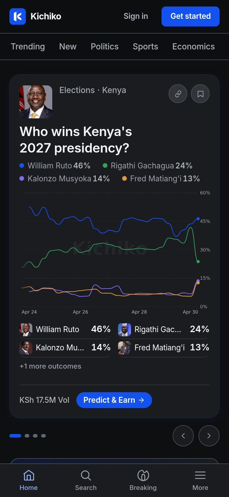
ke-gachagua-appeal-upheld resolves on the outcome of a pending appeal. ke-gachagua-on-ballot-2027 says its outcome “hinges on the courts”. Every market also needs the regulator's prior approval.
“A licensee shall not offer or facilitate a prediction market where the underlying event— (a) concerns proceedings pending before a court in Kenya …” (L.N. 112 of 2026, Reg. 45(7), Kenya Gazette Supplement No. 163, 30 June 2026; text read from the regulator's PDF.)
Production has not been changed. Removing these is your decision, ideally with counsel.
Market pages order price history oldest-first with .limit(200) (binary) and .limit(1000) (multi-outcome). Home queries hit PostgREST's 1,000-row cap. The API route already does it newest-first.
[1, 5, 10, 100].map(usdToLocal) in pm-ticket.tsx:560, and line 568 pre-fills the first chip. Replace with KSh 20 / 50 / 100 / 200 and an empty stake.
formatCents() in the limit row and order book; the error “between 0.1¢ and 99.9¢”; the screen-reader label “Limit price in cents”; three separate percentage formatters.
“To win” in green #42c772 on white is 2.18:1; the “To win” label in dark is 2.03:1; the inactive “No” is 1.91:1. Everything else in the product is almost clean.
search-view.tsx:91 starts the query empty and never reads ?q=, so a shared search link opens on “Trending now”.
515–550 KB per page and 250–400 KB of JavaScript, against Polymarket's 4.7–5.1 MB. At KSh 250 per GB that is the difference between about KSh 0.13 and KSh 1.20 per visit.
Court-case markets; “Earn” copy; GRA approval reference required to publish; banned-subject check; Uganda age 25; KSh 20 minimum.
Exit: no live market fails the check; copy lint green.
Newest-first chart data; one KSh and % formatter; search reads the URL; one spec of record.
Exit: notation and chart-freshness tests on every route.
Follow the OS theme; contrast by ratio and sunlight luminance; 44/48 px targets; focus rings; 2 px spacing; JavaScript ≤150 KB.
Exit: contrast, target, type and Lighthouse gates at 360×800, both themes.
No pre-selected side; empty stake; “You pay / If Yes you get / If No you lose”; the fee as one KSh line; M-Pesa name check; receipts by M-Pesa code.
Exit: an e2e order on staging; withdraw ≤ deposit in taps.
Fixed 180 px cards, no auto-rotating hero, fixed 0–100% chart axis, a real empty state, the leaderboard decision.
Exit: no ragged cards; feed controls ≥44 px.
Landing built once, within Kenya's ad rules. Then limits by default, self-exclusion in two taps, outreach to the heaviest losers, Kiswahili.
Exit: the same performance budget; Reg. 84 tools live.